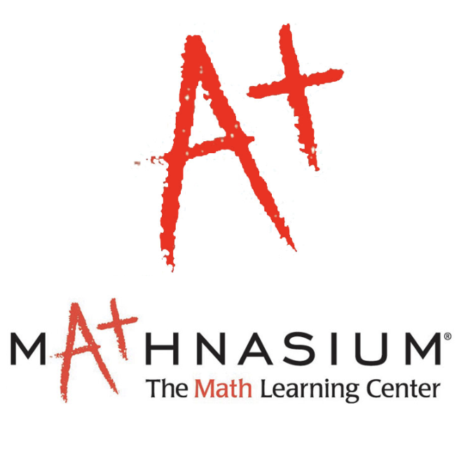

Research & Professional Experience

Research · Current
Yale School of Medicine — Augert Lab
Feb 2026 – Present
- Executing RNA-seq workflows: preprocessing, alignment, quantification, differential expression
- Building Linux-based bioinformatics pipelines for computational data processing
- Investigating transcriptomic patterns in small-cell lung cancer

Data Analytics
Microsoft — Data Analyst Intern
Jun 2024 – May 2025
- Developed AI models to automate medical document processing, reducing errors by 40%
- Designed automated workflows using Power BI, Power Automate & Power Apps
- Created interactive data system with Dataverse and Excel for executive reporting
AI Engineering
GreenLight Ag. — AI Data Intern
Jun 2021 – Aug 2021
- Trained ML models for crop/weed differentiation using Gimp and Linux
- Ran 12 in-field rover experiments with statistical sampling & data processing
- Collaborated with co-founders to increase crop yield via AI engineering

Education
Mathnasium — Academic Instructor
Jul 2021 – Aug 2022
- Taught 75+ students from Pre-K to Pre-Calculus
- Improved math comprehension by 94% and grades by 88%
- Oversaw data tracking and academic progress reporting
Leadership & Community
Healthcare Analytics · Current
STATCOM — Manos Juntos Free Clinic
Feb 2026 – Present
- Analyzed medication ordering data for cost, usage patterns, and trends
- Applied predictive models to support efficient inventory planning
- Delivered analytic findings to clinic leadership and multidisciplinary teams

Finance & Analytics
Student Managed Portfolio Project
Sep 2024 – Jun 2025
- Managed $1.6M Cal Poly healthcare portfolio using statistical and financial modeling
- Researched healthcare market trends to refine portfolio strategy
- Presented data-driven recommendations to 120+ faculty and peers

Mentorship
Women in Business Leadership Academy
Jan 2024 – Mar 2024
- Mentored 5 first-year women on professional development and career skills
- Led weekly sessions on interviews, resumes, and workplace navigation
- Guided mentees through internship applications and leadership opportunities